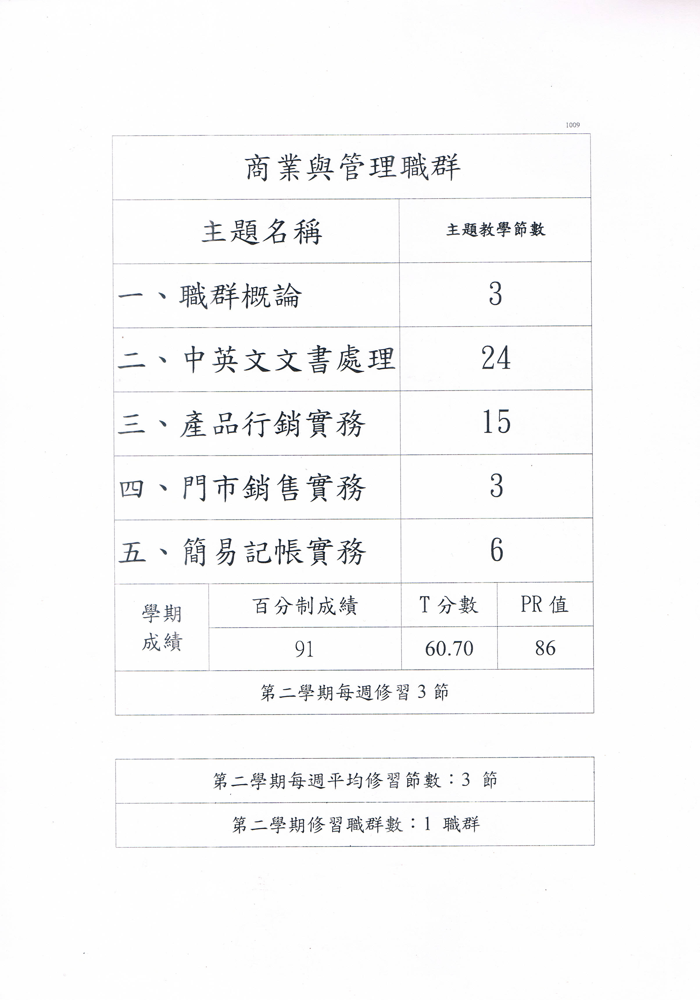
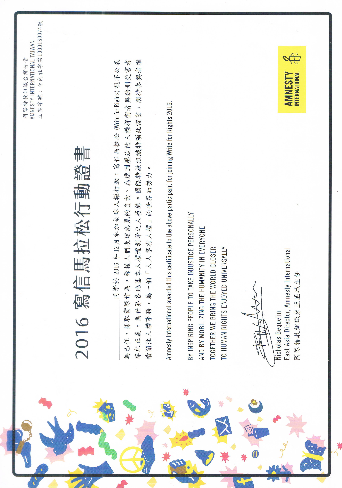

|
|
姓名:王志翔
|
|
生日:1998/9/2
|
|
學校:中原大學
|
|
Email:wl00161839@gmail.com
|
興趣:
程式設計
-國中開始因為遊戲而自學程式
1.楓之谷輔助器(外掛)
2.楓之谷私服架設及修改
3.創世神架設伺服器
4.創世神插件及小遊戲製作
讀異世界輕小說
看動漫
個人特質:
有積極心
-GO~GO~GO~~
愛幻想
-擁有奇怪的想像力
些許膽怯
-常常擔心失敗
些許自信
-在有把握的事情上XD。
| 國中 | 日常 | 製作 VB 遊戲相關小程式 |
| 架設遊戲「楓之谷」私服 |
| 修改他人提供之 VB 程式 |
| 活動 | 考取電腦軟體丙級 |
| 技職合作參加電子電機及商業管理群各一學期 |
| 競賽 | 參加網界博覽會全國賽‐金牌 |
| 參加網界博覽會國際賽‐銀牌 |
| 技職合作競賽商業管理群‐佳作 |
| 高職 | 日常 | 學習程式語言‐ActionScript 3.0、ASP、VB、 Excel‐VBA、HTML 等。 |
| 製作專案‐企業網頁、取大到小 VBA、互動式訂餐 網頁、背單字 APP、電子書設計等。 |
| 暑期打工 | 中國父親工廠學習模具製作、UG 3D建模設計。 |
| 東莞淞山湖「台灣青年創新創業服務中心」工作。 |
| 活動 | 參加中國的佛山 Startup Weekend |
| 在創業服務中心工作時與企業家們共同進行企業參訪 |
參加網界博覽會全國賽‐金牌
參加網界博覽會國際賽‐銀牌
參加技職合作學程:
一學期電子電機系
一學期商業管理群
參加技職商業管理群競賽-佳作
考取電腦軟體丙級

高一上學期
第二次期中考文書處理第一名
第二次期中考程式設計第四名
APP 程式設計培訓營六小時研習
高一下學期
第一次期中考程式設計第一名
高一程式設計初階組第一名
校內網頁設計組第四名
行動電子書創作研習營六小時研習
高二下學期
校內網頁設計組第一名
發現桃園之美創意行銷 APP 競賽第二名
高二程式設計進階組第三名
全國高中生多媒體 APP 競賽佳作
二年級組 50 公尺自由式第五名
互動式媒體 APP 開發設計師培訓營 3 小時研習
網站架設與網頁設計專題指導研習 12 小時研習
實踐大學社工系一日體驗營研習
高三下學期
校內專題製作競賽優勝
創造中.......
／￣￣＼ ／￣￣＼
／ ／ ￣￣￣￣￣ ＼ ＼
＼＿／ ＼＿／
/ ∩ ∩ \
▏ ╭————————╮ ▏
▏ ｜● ●｜ ▏
▏ ╰————————╯ ▏
\ ╰——╯ /
＼________________／
豬年快樂....
幹部 社團
程式小老師 程式設計集訓社
高一上學期、高一下學期 高一下學期
高二上學期、高二下學期 高二下學期
實習股長 二次元研究社
高一上學期 高一上學期
高二下學期
桌上遊戲社
風紀股長 高二上學期
高二上學期
服務股長
高一下學期
安全股長
高三上學期

